(1).png)
Introduction
- Maxillary incisors are four in number i.e. two central incisors & two lateral incisors
- Maxillary central incisor is larger than the lateral incisor.
- Their major function is to cut food. Maxillary central incisor and lateral incisors complement each other in function
- The maxillary central incisors have a mesial surface next to one another at the midline.
- Their distal surface contact the mesial surfaces of the lateral incisors
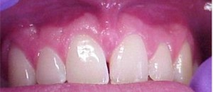
Notation for Permanent Maxillary Central Incisor
- Universal System - 8, 9
- Zsigmondy/Palmer System 1 1
- FDI System - 11,21
Chronology
| Appearance of enamel organ | 5 m.i.u |
| First evidence of calcification | 3-4 months |
| Crown completion | 4-5 years |
| Eruption | 7-8 years |
| Root completion | 10-11 years |
Average Dimensions in Millimeters
| Crown Length | Root Length | Mesiodistal Diameter at Contact Area | Mesiodistal Diameter at Cervical Line | Labiolingual Diameter at Crest of Curvature | Labiolingual Diameter at Cervical Line | Curvature of Cervical Line (M) | Curvature of Cervical Line (D) |
|---|---|---|---|---|---|---|---|
| 10.5 | 13.0 | 8.5 | 7.0 | 7.0 | 6.0 | 3.5 | 2.5 |
CROWN
Labial Aspect
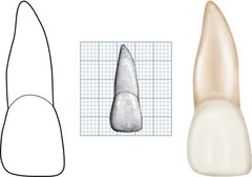
Crown from Labial Aspect:-
- Crown Shape & Size :-
- It has a square or rectangular appearance
- The crown is the longest of all human tooth crowns

- Maxillary central incisor is the widest anterior tooth mesiodistally, however, the crown is usually longer than wide.
- The mesiodistal measurement will be 8-9 mm wide at the contact areas, and at the cervix, it will be 1.5-2 mm less. The crest of curvature mesially and distally on the crown represents areas at which the tooth contacts its neighbors.
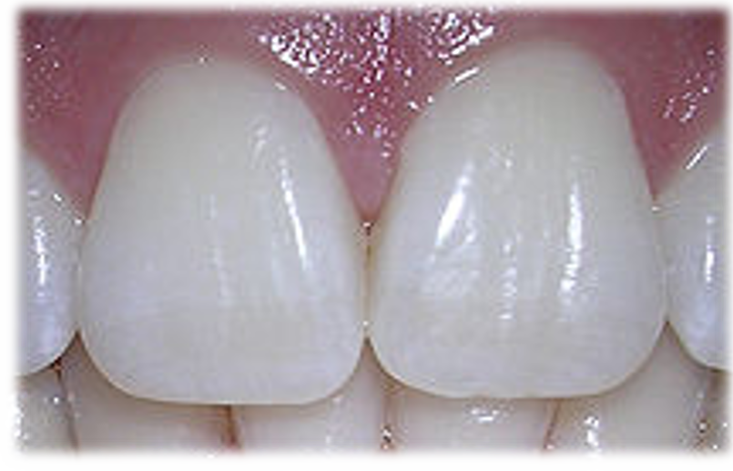
- The crown is narrowest in the cervical third and becomes broader towards the incisal third.
- The labial surface of the crown is usually convex, especially towards the cervical third. Some central incisors will be flat at the middle and incisal portions.
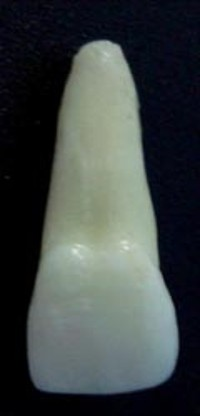
- The distal outline of the crown is more convex than the mesial outline.
- The labial surface of the crown is usually convex, especially towards the cervical third. Some central incisors will be flat at the middle and incisal portions.
Incisal Proximal Angles:
- The distoincisal angle is more rounded than the mesioincisal angle.
- The mesioincisal angle is nearly a right angle.
- The distoincisal angle is somewhat obtuse.
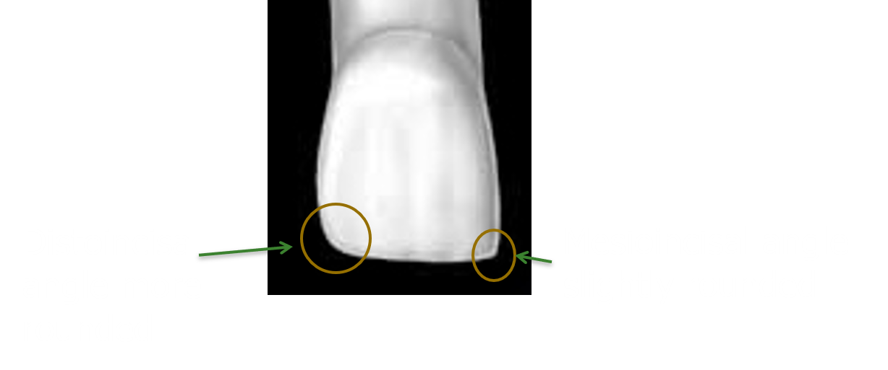
Contact Area
Max C.I
Mesial - Incisal third
Distal - Junction of incisal middle third
The cervical line follows a semi-circular direction with a curvature root-wise.
- The labial surface is marked by two shallow vertical depressions that help divide the labial surface into three portions. They are called the mesial, middle, and distal lobes. (There is a fourth lobe that forms the cingulum.)
- Mamelons are usually seen on newly emerged incisor teeth. They are three scallops on the incisal edge centered beneath the three facial lobes. They are worn off after the tooth erupts into functional position.
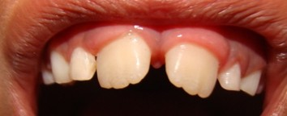
Lingual Aspect
- The lingual aspect of the tooth shows the cingulum, marginal ridges, and lingual fossa.
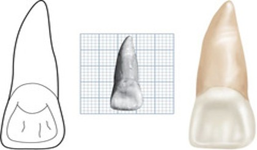
Crown from Lingual Aspect:
- The lingual aspect has convexities and concavities.
- Immediately below the cervical line, a smooth convexity is present called the cingulum; however, it is somewhat distal.
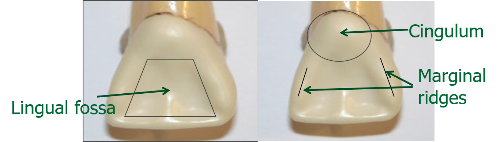
- Mesially and distally confluent with the cingulum are the marginal ridges (mesial marginal ridge being longer than the distal).
- Between the marginal ridges , below the cingulum a shallow concavity is present called the lingual fossa Outlinig the lingual fossa, the linguoincisal edge is raised somewhat, being on level with the marginal ridges,completing the lingual portion of the incisal ridge.
- So the lingual fossa is bordered mesially by the mesial marginal ridge, incisally by the lingual portion of the incisal ridge, distally by the distal marginal ridge , and cervically bt the cingulum.
- The cervical line on the labial and lingual surface is convex apically.
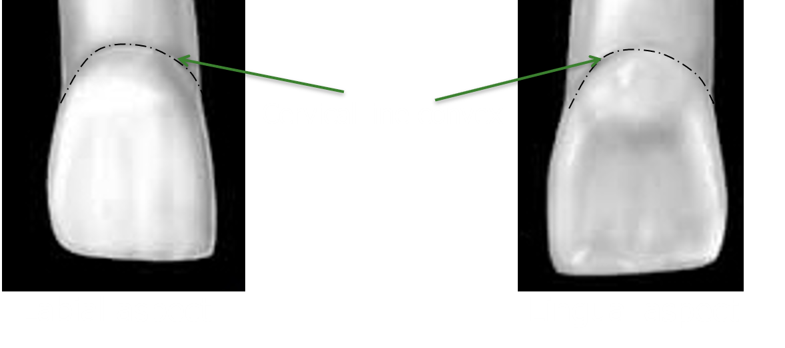
- The crown tapers lingually, making the crown calibrations at the two labial line angles more than the two lingual line angles and making the lingual portion narrower than the labial portion.
Mesial Aspect
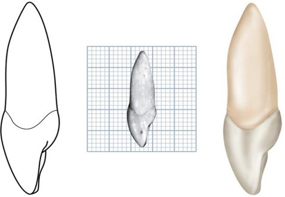
Crown from Mesial Aspect
- The crown is triangular or wedge-shaped, with the base towards the cervix and the apex at the incisal ridge.
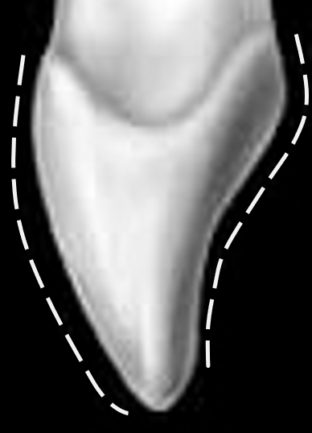
- Labially and lingually, immediately coronal to the cervical line, are the crests of curvature. These crests of contour give the crown its greatest labiolingual measurement.
- The labial outline from the crest of curvature to the incisal ridge is slightly convex.
- The lingual outline is convex at the cingulum, becomes concave at the mesial marginal ridge, and is slightly convex at the linguoincisal edge and incisal ridge.
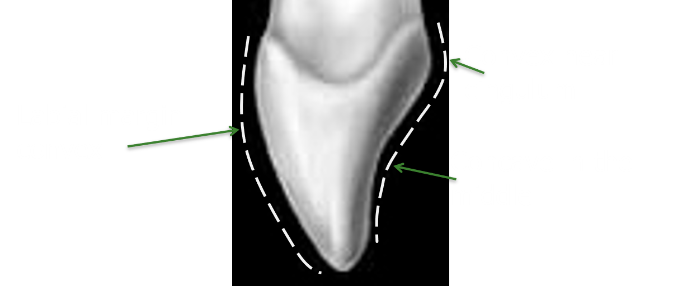
- The cervical line on the mesial aspect curves incisally to a noticeable degree (3.5mm).
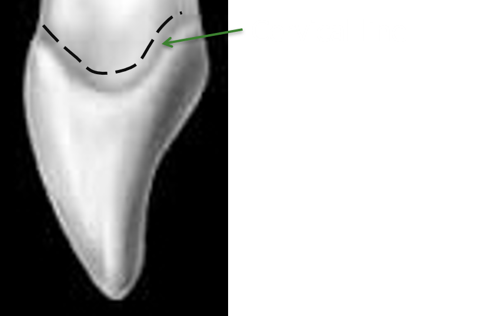
Distal Aspect
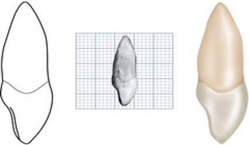
Crown from Distal Aspect:
- The distal surface is very similar to the mesial surface. However, the curvature of the cervical line is less than that present on the mesial surface.
Incisal Aspect
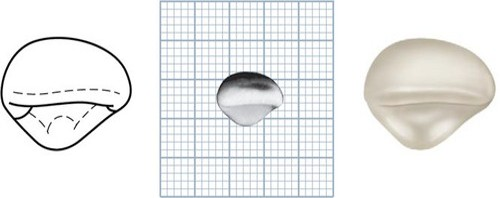
- The crown is roughly triangular with a somewhat curved labial outline forming the base that converges towards the cingulum.
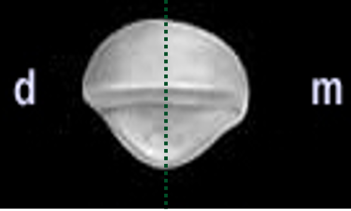
- Crown from the incisal aspect superimposes it over the root entirely so that the root is not visible.
- The labial face of the crown is broad and flat in comparison to the lingual surface, especially towards the incisal third.
- Cervical portion of the crown labially is convex.
- Incisal ridge may be seen clearly, and differentiation between the incisal edge and the remainder of the incisal ridge, with its slope towards the lingual, is clearly distinguishable.
- The mesiolabial and distolabial line angles are prominent.
- Cingulum is off-center to the distal, resulting in the mesial marginal ridge being longer than the distal marginal ridge.
ROOT
Root from Labial Aspect:
- Root is thick in the cervical third and narrows through the middle to a blunt apex.
- Its outline and shape is much like an ice cream cone.
- Root is slightly longer than the crown.

Root from Lingual Aspect:
- Lingual surface of the root is convex. It is narrower mesiodistally than the labial surface.
- The root is flattened on the mesial side approaching the lingual side. Often, there is a longitudinal depression on the mesial side of the root.
- The surface of the distal side of the root is convex.
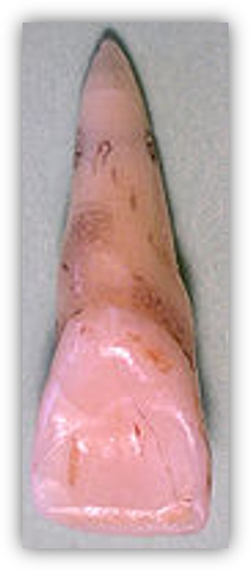
Root from Mesial Aspect
- The root from the mesial aspect is cone-shaped with a blunt apex.
- The mesial surface is somewhat flattened with a longitudinal depression in the middle third. This depression is located at the junction of the middle and lingual thirds of the root.
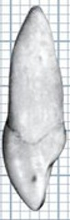
Root from Distal Aspect
- The shape of the distal root surface is similar to the mesial aspect, except that its surface is convex, and it does not have a depression.
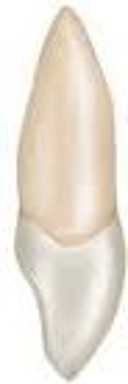
Cross Section
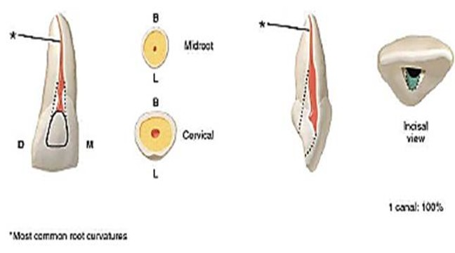
- A cross-section of the root at the cervix shows it to be triangular with rounded angles.
- One side of the triangle is labial, with the mesial and distal sides pointing lingually, the mesial being longer than the distal.
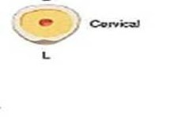